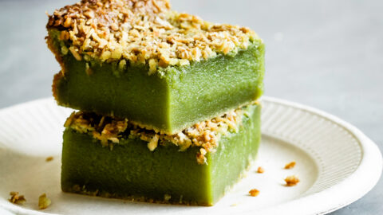

My Favorite Dau Hu Nuoc Duong Recipe

Description
Growing as a vietnamese kid, this was my favorite dessert. I loved eating this at buffets.
Served hot, the dish is a nice combination of mild sweetness from the syrup and smooth texture from the delicate pudding.
The fresh gingers, especially, adds pizzaz to the flavor profile. It is also really easy to make!
Ingredients
- 6 cups fresh soy milk
- 1 Tbsp corn starch
- 1/4 cup water
- 1/2 tsp glucono delta lactone (GDL)
- 3 inch knob fresh ginger
- 1 Tbsp white sugar
- 9 oz brown slab sugar or brown sugar
- 1/2 cup water
Steps
- In a medium saucepan, bring the soy milk to a gentle boil over Medium Low heat. Stir the milk occasionally to prevent it from sticking to the bottom of the pan and burning. Use a fine sieve to skim off any bubbles or foam from the top and discard.
- Prepare the thickener by combining the corn starch and water in a small bowl. Stir until smooth.
- In another small bowl, measure out the GDL and set aside for now.
- Once the soy milk comes to a gentle boil, turn off the heat.Stir the corn starch and water mixture again. Add the GDL to the corn starch mixture and combine together. Pour the contents into a 2-quart bowl.
- Working quickly, pour the hot soy milk into the 2-quart bowl. Stir the mixture just once. (The pudding starts to set quickly so do not over-stir.)
Skim off any bubbles on top of the soy milk and discard.
Cover the bowl with a kitchen towel and a lid.
Let the tofu pudding rest undisturbed for 30 minutes.
- Peel the ginger skin and discard. Cut the ginger into thin pieces.
Transfer the ginger into a small bowl. Add the white sugar and combine. Let rest for 10 minutes.
- Transfer the ginger into a medium saucepan. Using Medium heat, cook the ginger stirring continuously for 5-6 minutes. When the sugar recrystallizes, add the water and brown slab sugar. Cook over Medium heat melting the sugar. Stir occasionally to help the sugar dissolve. Once the sugar is completely dissolved, reduce the heat to Medium Low. Continue cooking for another 5-6 minutes allowing the liquid to thicken into a syrup.
- Using a spoon with a thin or sharp edge, skim off thin layers of the tofu pudding and transfer into a bowl. Top with a generous amount of the ginger syrup.
Enjoy the Tofu Pudding with Ginger Syrup warm.